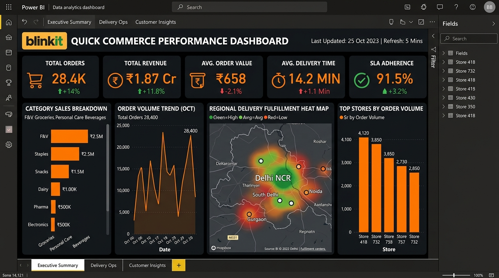

Quick Commerce AnalyticsBlinkit Sales and Delivery Dashboard
A consolidated view of order volumes, revenue, and delivery performance across regions and product categories to spot operational trends.
- Wrote SQL queries to extract, clean, and aggregate order and delivery records.
- Engineered interactive Power BI dashboard with DAX KPI measures, filters, and drill-downs.
- Surfaced patterns in order volume and delivery SLA fulfillment by category and region.